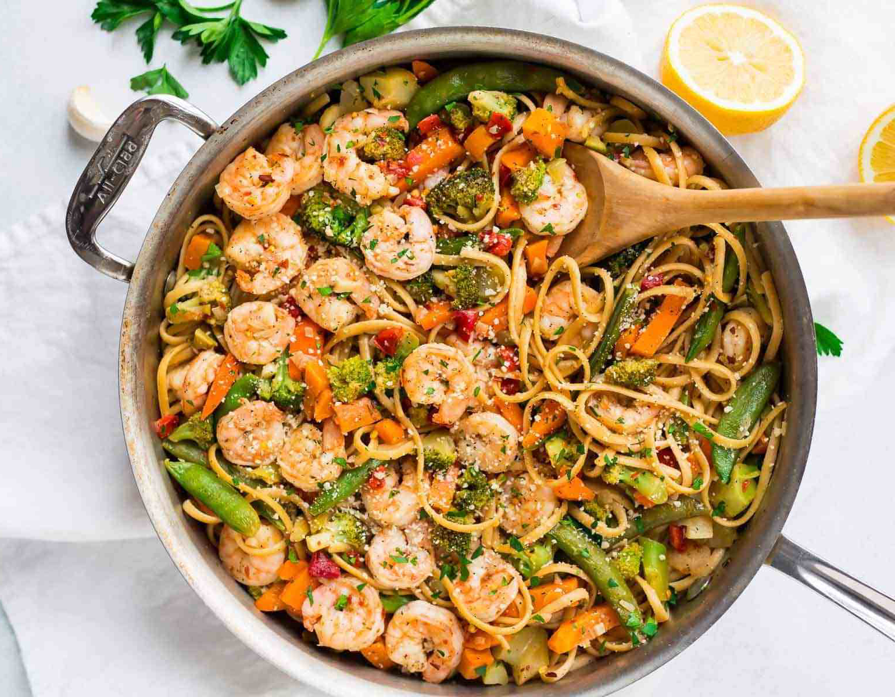

Garlic Shrimp Pasta
Ingredients
- Bring a large pot of salted water to a boil and cook the pasta until al dente, according to package directions. Reserve 1/4 cup pasta water, drain remaining water, and then toss with a bit of olive oil to prevent sticking. Set aside.
- Meanwhile, rinse the shrimp and pat dry. Heat 1 tablespoon olive oil in a large skillet over medium-high heat. Add the shallot and cook until fragrant, about 2 minutes. Add the garlic and cook 1 additional minute. Add the shrimp, and then sprinkle with half the amount of red pepper (1/4 or 1/2 teaspoon depending upon your desired spice level), 1/2 teaspoon salt, and 1/2 teaspoon black pepper. Sauté, stirring to coat with garlic, just until cooked through (both sides will be pink and opaque), about 3 to 4 minutes. Remove to a plate and set aside.
- Heat the remaining 1 tablespoon olive oil over medium high. Add the vegetables and the remaining 1/4 or 1/2 teaspoon red pepper, 1/2 teaspoon salt, and 1/2 teaspoon black pepper. Cook until the vegetables are hot and lightly sautéed, 4 to 5 minutes. Add the white wine and return the shrimp to the skillet. Cook for 2 minutes, allowing the wine to reduce. Stir in the lemon zest and juice and remove from heat.
- Add the pasta to the skillet and toss. If the pasta is too dry, add a bit of the reserved pasta water. Serve warm, topped with Parmesan and parsley.
Instructions